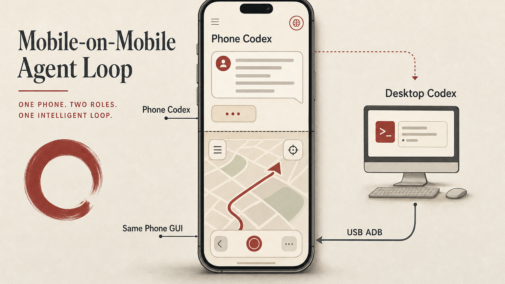

Mobile-on-Mobile Agent Loop
一个简单的手机 GUI 工作流：手机端 Codex 会话请求桌面 Codex 通过 USB ADB 操作同一台 Android 手机，而不需要专门的 mobile GUI agent。

结论先行
Experiment: OpenCodexLabs/open-codex-mobile · Mobile-on-Mobile Agent Loop.
这不是一次产品发布，也不是一个完整的 mobile GUI agent。它只是一个很小的手机 GUI 工作流，由手机端 Codex、桌面端 Codex、USB ADB、截图和人可见的验证组成。真正有用的闭环是：手机既可以是 agent 的控制界面，也可以是被操作的目标 GUI 环境。
用户从手机端 Codex 会话发起请求；桌面 Codex 接收任务；桌面通过 USB ADB 操作同一台 Android 手机；手机 App 返回真实 GUI 结果；截图和 UI 状态提供证据；最终答案再回到手机端对话里。
一句话说：移动端控制不必止步于监督桌面 agent；它也可以触发桌面 agent 去操作移动 GUI 本身。
那个有点奇怪的瞬间
大多数 mobile-agent 产品会把手机当成遥控器：你看状态、批准命令、补充上下文、读最终答案。这已经改变了 agent 工作流，因为人不必一直坐在电脑前等长任务跑完。
这个实验往前多走了一步：同一台发出指令的手机，也变成了被操作的对象。桌面仍然是可信执行机器，但动作表面变成了 Android 手机 GUI：真实 App、真实屏幕、真实按钮、真实状态。
这个区别很重要。很多有价值的任务藏在移动 App、弱 API、本地权限或 app-only 界面背后。如果 agent 能在有证据的情况下安全操作手机 GUI，那么这些任务就能在干净 API 出现之前进入 agent workflow。
这个闭环
实现上我故意保持简单。第一版 proof 不需要特殊的移动自动化框架。USB ADB 已经足够打开 App、截图、检查 UI 状态、点击、输入和验证结果。

| 角色 | 它做什么 | 为什么重要 |
|---|---|---|
| 手机端 Codex | 捕获用户意图，并接收最终结果。 | 手机保持轻量控制界面的角色。 |
| 桌面端 Codex | 运行本地工具、ADB、截图和验证。 | 可信机器仍然负责执行。 |
| USB ADB | 把动作桥接到 Android GUI。 | 实验避免网络复杂度，也更容易复现。 |
| 同一台手机 GUI | 提供真实 App 状态和视觉结果。 | agent 操作的是用户真正关心的环境。 |
演示
我用了一个刻意普通的任务：在连接的手机上打开地图 App，搜索目的地，读取路线或打车估计，并在任何不可逆动作之前停止。公开截图保留地图流程的可见性；只有控制端截图中的本地基础设施细节被遮挡。
这个 demo 的重点不是具体路线，而是 agent 确实操作了一个真实手机 App，并且带着同一台设备上的证据回来了。

这件事改变了什么
重要结果不是 ADB 可以点击手机。这件事早就成立。更有意思的是产品形态：一个移动端 agent 会话可以把执行委托给桌面 agent，而桌面 agent 又可以操作同一台移动 GUI 并把结果带回来。
这暗示了一种更广义的分工：手机适合表达意图、监督、快速批准和读取最终结果；桌面适合可信执行、本地工具、文件、日志和长时间任务；手机 GUI 则适合承载那些还没有干净 API 的 app-only 任务。
当这些部分连接起来后，移动 App 就不再只是一个聊天框，而会成为 agent workflow 里的真实动作表面。
为什么我不会一开始就做 MCP
很容易想把它立刻做成 MCP server、可复用 skill 或 polished mobile-control product。但我不会从那里开始。
第一个可复用单元应该是 workflow，而不是 protocol。agent 需要一个安全节奏：截图、检查 UI 状态、执行一个小动作、再截图、在不可逆边界停止，并总结证据。如果没有这个节奏，更漂亮的工具接口只会让不安全自动化变得更容易。
| 层级 | 什么时候足够 | 什么时候升级 |
|---|---|---|
| 原始 ADB workflow | 一台手机、一次实验、有人监督的任务。 | 当步骤开始重复，并且需要 guardrails。 |
| Skill | 固化安全操作习惯和停止条件。 | 当多个 agent 应该复用同一套流程。 |
| MCP | 暴露稳定工具，如 screenshot、dump UI、tap、type、open app。 | 当多个 client 或 device 需要同一接口。 |
安全边界
这种 loop 应该保持保守。打开 App、搜索、读取结果、收集截图是可以的；但不应该在没有明确用户确认的情况下静默下单、支付、发消息、修改账号设置、授予新权限或处理敏感内容。
发布轨迹时也一样。手机截图往往包含比预期更多的个人信息：位置、账号状态、通知图标、地图上下文、本地 IP、附近地点和历史 App 状态。公开 artifact 应该被认真审查，不属于重点的基础设施细节应该遮挡。
一句话故事
Mobile-on-Mobile Agent Loop 只是一个小实验，但它指向了一个有用的未来 primitive：手机可以是意图开始的地方，桌面可以是执行发生的地方，而同一台手机 GUI 可以是 agent 操作的真实世界表面。
手机不只是 agent 的遥控器。有时它就是环境本身。